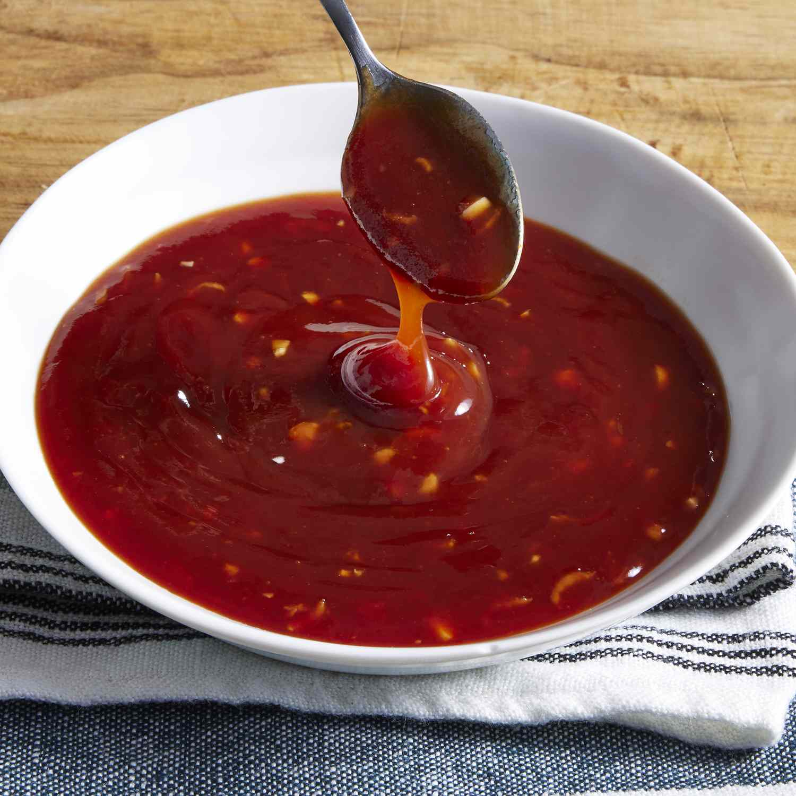

Photo by dotdash meredith food studios
Tonkatsu sauce is a thick, dark brown Japanese condiment specifically designed for dipping or drizzling over crispy breaded pork cutlets (tonkatsu). It is widely considered a Japanese version of barbecue sauce, characterized by a complex flavor profile that is sweet, tangy, and savory with noticeable umami undertones.
The flavor of this sauce improves as it sits. You can make it a day ahead and refrigerate to let the flavors blend. Stir or shake well before serving.
Home